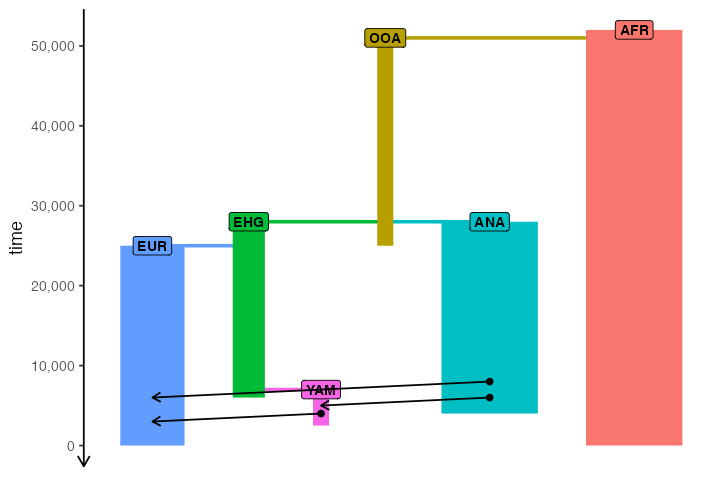
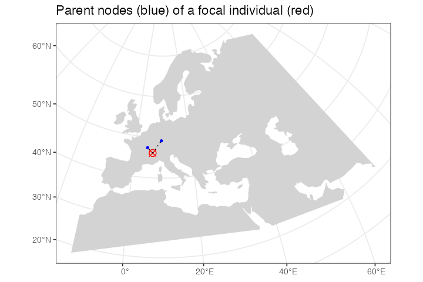
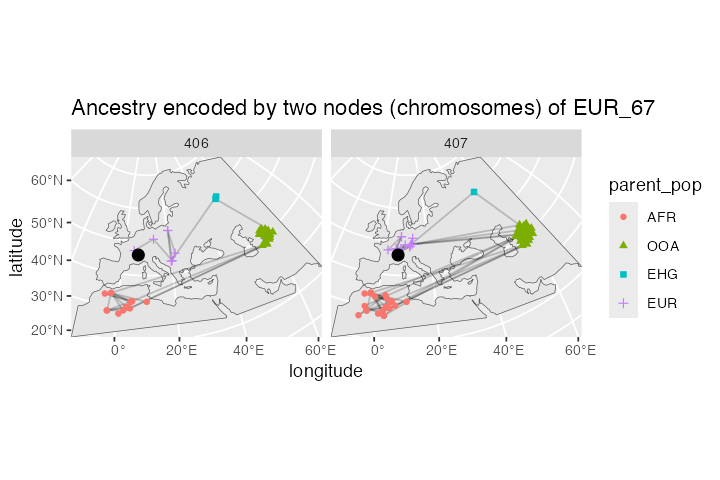

Spatially annotated tree sequences
Source:vignettes/vignette-06-locations.Rmd
vignette-06-locations.RmdIntroduction
The main selling point of the slendr R package is programming complex spatially explicit population genetic models. Because we use SLiM as the simulation engine, we can store simulated data efficiently in a tree sequence format which allows us to run large population-scale simulations. In the previous vignettes, we described how you can specify spatial population dynamics and how you can access tree sequence data and calculate population genetic statistics on it (focusing on non-spatial models for simplicity). Now it’s time to show you how to work with simulated tree sequence in a spatial context.
Model specification
Let’s first load all required R libraries:
We begin by specifying our spatial model. We will use the same demographic model of modern human history in West Eurasia, which we extensively discussed in the introductory tutorial and on the main landing page. Here is a complete model definition script, without further comments:
# simulated world map
map <- world(
xrange = c(-13, 70), # min-max longitude
yrange = c(18, 65), # min-max latitude
crs = "EPSG:3035" # coordinate reference system (CRS) for West Eurasia
)
# couple of broad geographic regions
africa <- region(
"Africa", map,
polygon = list(c(-18, 20), c(38, 20), c(30, 33),
c(20, 33), c(10, 38), c(-6, 35))
)
europe <- region(
"Europe", map,
polygon = list(
c(-8, 35), c(-5, 36), c(10, 38), c(20, 35), c(25, 35),
c(33, 45), c(20, 58), c(-5, 60), c(-15, 50)
)
)
anatolia <- region(
"Anatolia", map,
polygon = list(c(28, 35), c(40, 35), c(42, 40),
c(30, 43), c(27, 40), c(25, 38))
)
# define population histories
# African ancestral population
afr <- population(
"AFR", time = 52000, N = 3000,
map = map, polygon = africa
)
# population of the first migrants out of Africa
ooa <- population(
"OOA", parent = afr, time = 51000, N = 500, remove = 25000,
center = c(33, 30), radius = 400e3
) %>%
move(
trajectory = list(c(40, 30), c(50, 30), c(60, 40)),
start = 50000, end = 40000, snapshots = 20
)
# Eastern hunter-gatherers
ehg <- population(
"EHG", parent = ooa, time = 28000, N = 1000, remove = 6000,
polygon = list(
c(26, 55), c(38, 53), c(48, 53), c(60, 53),
c(60, 60), c(48, 63), c(38, 63), c(26, 60))
)
# European population
eur <- population(name = "EUR", parent = ehg, time = 25000, N = 2000, polygon = europe)
# Anatolian farmers
ana <- population(
name = "ANA", time = 28000, N = 3000, parent = ooa, remove = 4000,
center = c(34, 38), radius = 500e3, polygon = anatolia
) %>%
expand_range(
by = 2500e3, start = 10000, end = 7000,
polygon = join(europe, anatolia), snapshots = 20
) # expand the range by 2.500 km
# Yamnaya steppe population
yam <- population(
name = "YAM", time = 7000, N = 500, parent = ehg, remove = 2500,
polygon = list(c(26, 50), c(38, 49), c(48, 50),
c(48, 56), c(38, 59), c(26, 56))
) %>%
move(trajectory = list(c(15, 50)), start = 5000, end = 3000, snapshots = 10)
# geneflow events
gf <- list(
gene_flow(from = ana, to = yam, rate = 0.5, start = 6000, end = 5000, overlap = FALSE),
gene_flow(from = ana, to = eur, rate = 0.5, start = 8000, end = 6000),
gene_flow(from = yam, to = eur, rate = 0.75, start = 4000, end = 3000)
)
# compile the spatial model
model <- compile_model(
populations = list(afr, ooa, ehg, eur, ana, yam),
gene_flow = gf,
generation_time = 30, resolution = 10e3,
competition = 150e3, mating = 120e3, dispersal = 90e3
)As a sanity check that we defined the demography correctly, you can
plot a graph summarizing population divergences and geneflow events by
calling plot_model(model):
plot_model(model)
And for completeness, here is a (slightly busy) overview of the spatial population ranges that we defined above:
plot_map(afr, ooa, ehg, eur, ana, yam)
Scheduling sampling events and simulation
Now we will schedule the sampling of a single individual from each population every two thousand years, starting from 40 thousand years ago all the way to the present (this is a feature discussed in the basic tree sequence overview):
# one ancient individual every two thousand years
ancient <- schedule_sampling(model,
times = seq(40000, 1, by = -500),
list(ooa, 1), list(ehg, 1), list(eur, 1),
list(ana, 1), list(yam, 1))
# present-day Africans and Europeans
present <- schedule_sampling(model, times = 0, list(afr, 5), list(eur, 30))
samples <- rbind(ancient, present)Finally, we can simulate data from our model and process the output tree sequence (recapitate and simplify it):
ts <- slim(
model, sequence_length = 100e3, recombination_rate = 1e-8, burnin = 200e3,
samples = samples, method = "batch", random_seed = 314159, max_attempts = 1
) %>%
ts_recapitate(recombination_rate = 1e-8, Ne = 10000, random_seed = seed) %>%
ts_simplify()
ts#> ╔═════════════════════════╗
#> ║TreeSequence ║
#> ╠═══════════════╤═════════╣
#> ║Trees │ 93║
#> ╟───────────────┼─────────╢
#> ║Sequence Length│ 100000║
#> ╟───────────────┼─────────╢
#> ║Time Units │ ticks║
#> ╟───────────────┼─────────╢
#> ║Sample Nodes │ 432║
#> ╟───────────────┼─────────╢
#> ║Total Size │206.4 KiB║
#> ╚═══════════════╧═════════╝
#> ╔═══════════╤════╤════════╤════════════╗
#> ║Table │Rows│Size │Has Metadata║
#> ╠═══════════╪════╪════════╪════════════╣
#> ║Edges │1213│37.9 KiB│ No║
#> ╟───────────┼────┼────────┼────────────╢
#> ║Individuals│ 724│72.5 KiB│ Yes║
#> ╟───────────┼────┼────────┼────────────╢
#> ║Migrations │ 0│ 8 Bytes│ No║
#> ╟───────────┼────┼────────┼────────────╢
#> ║Mutations │ 0│ 1.2 KiB│ No║
#> ╟───────────┼────┼────────┼────────────╢
#> ║Nodes │ 944│35.7 KiB│ Yes║
#> ╟───────────┼────┼────────┼────────────╢
#> ║Populations│ 7│ 2.7 KiB│ Yes║
#> ╟───────────┼────┼────────┼────────────╢
#> ║Provenances│ 3│37.2 KiB│ No║
#> ╟───────────┼────┼────────┼────────────╢
#> ║Sites │ 0│16 Bytes│ No║
#> ╚═══════════╧════╧════════╧════════════╝Extracting spatial tree sequence information
As we showed in the basic
tutorial, the most important function for data exploration is
ts_nodes(). This function extracts all information about
individuals and nodes recorded in a tree sequence object loaded and
annotated by slendr :
data <- ts_nodes(ts)For completeness, we have also functions such as
ts_individuals(), ts_nodes() and
ts_edges() which extract tree
sequence tables in their “raw” unprocessed form, but
ts_nodes() is much more convenient for data exploration and
analyses. First, it combined information in the low-level tables of
individuals and nodes into a single table but more importantly, if the
model which generated this data was a spatial model,
ts_nodes() automatically annotates the node/individual
tables with the position of each node in space (in real projected
coordinates) and time. This means that we can do spatial data analysis
directly on the table returned by ts_nodes().
Even better, although we can see below that the returned object
belongs to slendr’s own class slendr_ts_nodes, it
is internally stored as a spatial sf object. This means
that we can use all the functionality of the powerful R package sf as well
as many other packages for geospatial analyses directly on the
data:
class(data)#> [1] "slendr" "slendr_nodes" "sf" "tbl_df" "tbl"
#> [6] "data.frame"Typing the object into the R console presents a user-friendly summary of the spatio-temporal data extracted from the tree sequence:
data#> slendr 'nodes' object
#> ---------------------
#> times are expressed in a backward time direction
#>
#> summary of the table data contents:
#> AFR - 5 'sampled', 5 'remembered', 5 'retained', 5 'alive' individuals
#> EUR - 79 'sampled', 79 'remembered', 30 'retained', 30 'alive' individuals
#> OOA - 31 'sampled', 31 'remembered', NA 'retained', 0 'alive' individuals
#> ANA - 48 'sampled', 48 'remembered', NA 'retained', 0 'alive' individuals
#> EHG - 44 'sampled', 44 'remembered', NA 'retained', 0 'alive' individuals
#> YAM - 9 'sampled', 9 'remembered', NA 'retained', 0 'alive' individuals
#>
#> total:
#> - 216 'sampled' individuals
#> - 216 'remembered' individuals
#> - 508 'retained' individuals
#> - 35 'alive' individuals
#> ---------------------
#> oldest sampled individual: 40000 time units 'before present'
#> youngest sampled individual: 0 time units 'before present'
#>
#> oldest node: 252014.9 time units 'before present'
#> youngest node: 0 time units 'before present'
#> ---------------------
#> overview of the underlying sf object:
#>
#> # A tibble: 944 × 13
#> name pop node_id time time_tskit location sampled
#> <chr> <fct> <int> <dbl> <dbl> <POINT [m]> <lgl>
#> 1 AFR_1 AFR 362 0 0 (3072714 315424) TRUE
#> 2 AFR_1 AFR 363 0 0 (3072714 315424) TRUE
#> 3 AFR_2 AFR 364 0 0 (2898146 1202818) TRUE
#> 4 AFR_2 AFR 365 0 0 (2898146 1202818) TRUE
#> 5 AFR_3 AFR 366 0 0 (3466565 1087738) TRUE
#> 6 AFR_3 AFR 367 0 0 (3466565 1087738) TRUE
#> 7 AFR_4 AFR 368 0 0 (3030706 587947.3) TRUE
#> 8 AFR_4 AFR 369 0 0 (3030706 587947.3) TRUE
#> 9 AFR_5 AFR 370 0 0 (4464229 538126) TRUE
#> 10 AFR_5 AFR 371 0 0 (4464229 538126) TRUE
#> # ℹ 934 more rows
#> # ℹ 6 more variables: remembered <lgl>, retained <lgl>, alive <lgl>,
#> # pedigree_id <dbl>, ind_id <dbl>, pop_id <int>In the first part of the summary, we see how many individuals
(sampled or retained) and nodes are present in the tree sequence
together with additional useful information, including a section of the
internally stored sf object. And this is a crucial
point—**we can always use the internal sf object with the
spatial
data directly*.
Because the data returned by ts_nodes() is internally
transformed to the projected CRS used by the model, we can use the
returned object as any other data of the class sf. For
instance, at the beginning of this vignette, we specified the world map
of the model to be represented in projected CRS (EPSG 3035) which we can
verify by typing:
map#> slendr 'map' object
#> -------------------
#> map: internal coordinate reference system EPSG 3035
#> spatial limits (in degrees longitude and latitude):
#> - vertical -13 ... 70
#> - horizontal 18 ... 65The fact that the ts_nodes() result is just another
sf object makes it easy to visualize overlay contents on
this map, as we will see below.
Using the simple features interface
It’s hard to overstate how powerful the R ecosystem around the sf package is. However, getting familiar with this package and geospatial analysis in general can be a bit of a hurdle, especially for novice users because it takes time to get familiar with many new concepts.
Although many slendr features for encoding and programming spatial models and handling simulated tree sequence data discussed so far are designed to abstract away most of the complexities of the underlying low-level details to let you focus on the problem at hand, spatial data analysis is unfortunately whole another matter. Luckily, because the data generated by slendr is no different from any other source of spatial data out there and you have great free resources at your disposal.
The bottom line is: the spatio-temporal data extracted from tree
sequences by slendr is no different than an any other normal sf object. Any
resource that you find for manipulating, plotting, and analysing
sf data can be applied to slendr results as
well.
In the remainder of this vignette we will look at a couple of examples.
Plotting locations of simulated sampled individuals
Every spatial object in slendr is internally of the class
sf. The flexibility of of ggplot2 and sf packages means
that we can overlay the locations of sampled individuals (saved in a
sf format by ts_nodes()) on top of our world
map (also an sf object):
sampled_data <- ts_nodes(ts) %>% filter(sampled)
ggplot() +
geom_sf(data = map, fill = "lightgray", color = NA) +
geom_sf(data = sampled_data, aes(shape = pop, color = time)) +
ggtitle("Locations of simulated sampled individuals") +
scale_color_continuous(type = "viridis") +
theme_bw()
Because sf simple features objects (and, by
extension, even slendr_spatial objects) are internally
stored as normal
data frames with couple more bells and whistles on top of them, we
have all the powerful tools for
manipulating tabular data at our disposal.
As an example, let’s say we wanted to split the sampled individuals in the tree sequence into epochs and plot those individually using standard ggplot2 features. We could simply first do this, adding a new column specifying to which epoch does each simulated individual belong:
epochs <- sampled_data %>%
mutate(epoch = cut(time, breaks = c(40000, 30000, 10000, 4000, 0)),
epoch = ifelse(is.na(epoch), 0, epoch),
epoch = factor(epoch, labels = c("present", "(present, 4 ky]", "(4 ky, 10 ky]",
"(10 ky, 30 y]", "(30 ky, 40 ky]")))This chunk of code simply adds a new column epoch to the
sf spatial data frame object called epochs
here.
Then we can use the ggplot2 function geom_sf to
plot the locations of sampled individuals on the map, with each facet
corresponding to one epoch (the warning can be safely ignored):
ggplot() +
geom_sf(data = map, fill = "lightgray", color = NA) +
geom_sf(data = epochs, aes(shape = pop, color = pop)) +
facet_wrap(~ epoch) +
ggtitle("Locations of simulated sampled individuals in different epochs") +
theme_bw()
We hope this little excursion to handling slendr spatial
objects (and, by extension, sf objects) with standard data
frame manipulation functions and ggplot2 visualisation
convinced you that you have a great flexibility in analysing spatial
slendr data. For best introduction into so-called “tidy” data
analysis, we encourage you to read the freely-available book R for Data Science.
Extracting spatio-temporal ancestral relationships
Perhaps even more useful than plotting the locations of simulated
individuals is accessing the locations (and times) of all
ancestors of a particular tree sequence node (a “focal node”).
Starting from the focal node or individual, we can trace the
geographical location of nodes in its lineage going back all the way to
the root with the function ts_ancestors().
Because we record the time and the location of every individual that happens to be the ancestor of at least one sampled individual, this means that we know the true location of every node of the tree sequence.
The simplest use case is determining the locations and times of every single node in the genealogical history of an individual along the tree sequence (it is possible to recover ancestral relationships for multiple samples at once too):
ind <- "EUR_67"
lineages <- ts_ancestors(ts, ind, verbose = TRUE)#> Collecting ancestors of EUR_67 [1/1]...#>
#> Generating data about spatial relationships of nodes...The function starts at a given node (or, if a name of a sampled
diploid individual is provided, two nodes), extracts information about
all the parent nodes of that node in the entire tree sequence, records
their locations and times, then proceeds one level “higher” in the
genealogical history to gather information about the parents of those
parent nodes, etc., until it reaches a root node. The result of this
process is another sf object in which each row of the table
encodes information about single branch in the genealogy of the “focal”
node or individual (in our example, "EUR_25"):
lineages#> Simple feature collection with 154 features and 12 fields
#> Active geometry column: connection
#> Geometry type: LINESTRING
#> Dimension: XY
#> Bounding box: xmin: 2721964 ymin: 546923.8 xmax: 8458020 ymax: 4686009
#> Projected CRS: ETRS89-extended / LAEA Europe
#> # A tibble: 154 × 15
#> name pop node_id level child_id parent_id child_time parent_time child_pop
#> * <chr> <fct> <int> <fct> <int> <int> <dbl> <dbl> <fct>
#> 1 EUR_… EUR 406 1 406 450 0 1810 EUR
#> 2 EUR_… EUR 406 1 406 525 0 8770 EUR
#> 3 EUR_… EUR 406 2 450 525 1810 8770 EUR
#> 4 EUR_… EUR 406 2 525 543 8770 9760 ANA
#> 5 EUR_… EUR 406 3 543 715 9760 24130 ANA
#> 6 EUR_… EUR 406 4 715 769 24130 26830 ANA
#> 7 EUR_… EUR 406 4 715 774 24130 26950 ANA
#> 8 EUR_… EUR 406 4 715 787 24130 27760 ANA
#> 9 EUR_… EUR 406 5 769 787 26830 27760 ANA
#> 10 EUR_… EUR 406 5 774 811 26950 28240 ANA
#> # ℹ 144 more rows
#> # ℹ 6 more variables: parent_pop <fct>, child_location <POINT [m]>,
#> # parent_location <POINT [m]>, connection <LINESTRING [m]>, left_pos <dbl>,
#> # right_pos <dbl>In each row of the table, two columns location and
parent_location carry the spatial location of a node
(node_id) and its parent node (parent_id),
respectively, same with the columns time and
parent_time (times of nodes) and pop and
parent_pop (populations to which the nodes belong). The
column connection contains an sf geometry
object of the line connecting the two nodes in the coordinate reference
system of the “model world”. The column focal_id tells us
to which focal node’s genealogy the rows of the table belong to, and the
level column shows how deep in the genealogical past does
each branch (i.e. row of the table) belong to.
This table contains a complete information about spatio-temporal
relationships between the nodes in the genealogy of the given focal
sample. In the spirit of demonstrating of slendr tree sequence
tables interact with the sf and ggplot2 environments,
let’s look at the most immediate parent nodes of the two nodes in the
sampled individual (i.e. nodes at the level 1) using the
filter function from the R package dplyr:
filter(lineages, level == 1)#> Simple feature collection with 3 features and 12 fields
#> Active geometry column: connection
#> Geometry type: LINESTRING
#> Dimension: XY
#> Bounding box: xmin: 5202360 ymin: 2284049 xmax: 5564577 ymax: 2754068
#> Projected CRS: ETRS89-extended / LAEA Europe
#> # A tibble: 3 × 15
#> name pop node_id level child_id parent_id child_time parent_time child_pop
#> * <chr> <fct> <int> <fct> <int> <int> <dbl> <dbl> <fct>
#> 1 EUR_67 EUR 406 1 406 450 0 1810 EUR
#> 2 EUR_67 EUR 406 1 406 525 0 8770 EUR
#> 3 EUR_67 EUR 407 1 407 449 0 1810 EUR
#> # ℹ 6 more variables: parent_pop <fct>, child_location <POINT [m]>,
#> # parent_location <POINT [m]>, connection <LINESTRING [m]>, left_pos <dbl>,
#> # right_pos <dbl>As we mentioned above, there are three columns encoding spatial
information: location and parent_location
carry information about the location of the child and parent node
(POINT class), and the connection object
(LINESTRING class) contains the line connecting the two
nodes (both a branch in the tree sequence and also the spatial
connection). We can plot all three spatial features (two points and a
line) individually on a map:
level1_branches <- ts_ancestors(ts, "EUR_67") %>% filter(level == 1)
ggplot() +
geom_sf(data = map, fill = "lightgray", color = NA) +
geom_sf(data = level1_branches[, ]$child_location, shape = 13, size = 3, color = "red") +
geom_sf(data = level1_branches[, ]$connection, linetype = 3) +
geom_sf(data = level1_branches[, ]$parent_location, shape = 20, color = "blue") +
theme_bw() +
ggtitle("Parent nodes (blue) of a focal individual (red)")
In the figure above we can see the red focal node and its immediate
parents in the tree sequence genealogy (in the coalescent sense, not
immediate parents of that individual!). In case you’re surprised to see
more than two parents, recall that recombination events make the history
encoded by a sample more complicated as it can involve more ancestors as
we “move up” a tree from a sample, not just two ancestors. Looking at
our example in more detail, we can see that one node (chromosome) of the
individual “EUR_67” has two ancestors, each covering a portion of that
individuals chromosome, with the other chromosome being covered by a
single ancestor (columns left_pos and
right_pos):
as_tibble(level1_branches)[, c("name", "node_id", "child_id", "parent_id", "left_pos", "right_pos")]#> # A tibble: 3 × 6
#> name node_id child_id parent_id left_pos right_pos
#> <chr> <int> <int> <int> <dbl> <dbl>
#> 1 EUR_67 406 406 450 0 7084
#> 2 EUR_67 406 406 525 7084 100000
#> 3 EUR_67 407 407 449 0 100000A more convenient way to do this analysis is a companion function to
ts_ancestors() called plot_ancestors(). This
function accepts an sf object with the spatial branching
data created by ts_ancestors() and plots the paths between
nodes on a map leading from a focal node up to the root(s) of the tree
sequence (instead of just paths to immediate parents shown in the
previous figure). In this case, because we are working with a single
diploid individual, we get two sets of paths for each of its nodes
(chromosomes) and plot them in two facets:
ggplot() +
geom_sf(data = map) +
geom_sf(data = lineages, size = 0.5, alpha = 0.2) +
geom_sf(data = sf::st_set_geometry(lineages, "parent_location"),
aes(shape = parent_pop, color = parent_pop)) +
geom_sf(data = filter(ts_nodes(ts), name == ind), size = 3) +
guides(alpha = "none") +
coord_sf(expand = 0) +
labs(x = "longitude", y = "latitude") +
facet_grid(. ~ node_id) +
ggtitle("Ancestry encoded by two nodes (chromosomes) of EUR_67")
You can compare this result to the animation which recapitulates the simulation, presented in the first vignette.
After comparing our spatial tree sequence figure with the animation, we can immediately notice several things:
All spatial tree sequence paths trace the ancestry of our single European individual back to Africa. In fact, we also see a cluster of past ancestral nodes (i.e. concentrated coalescent events) in the place where the Out of Africa (OOA) migrant population settled around 40,000 thousand years ago (yellow population in the the animation).
One chromosome traces its ancestry to an EHG population indicated by a green square This is expected because we programmed a Yamnaya migration (descending from EHG) from east to central Europe to contribute significant part of ancestry to present-day Europeans (compare to the demographic graph on top of this vignette).
We also see that the other chromosome traces of its ancestry to the Anatolia (blue crosses). This makes sense, because we have simulated European ancestry as being part Anatolian.
Let’s look at the spatial ancestry of another sample. For instance, we know that the simulated history of the Anatolian population in our model is much simpler. According to the demographic graph above, Anatolians split from the ancestral population of Eurasians in Anatolia and then expanded in a wave to Europe. We have sampled the following individuals:
ts_samples(ts) %>% filter(pop == "ANA")#> # A tibble: 48 × 3
#> name time pop
#> <chr> <int> <chr>
#> 1 ANA_1 27500 ANA
#> 2 ANA_2 27000 ANA
#> 3 ANA_3 26500 ANA
#> 4 ANA_4 26000 ANA
#> 5 ANA_5 25500 ANA
#> 6 ANA_6 25000 ANA
#> 7 ANA_7 24500 ANA
#> 8 ANA_8 24000 ANA
#> 9 ANA_9 23500 ANA
#> 10 ANA_10 23000 ANA
#> # ℹ 38 more rowsCan we see a hint of the spatial dynamics of Anatolians in the
spatio-temporal distribution of ancestral node locations of one of the
sampled individuals? Let’s pick the last individual and immediately plot
its spatial ancestry tidyverse-style using the pipe operator
%>%:
lineages <- ts_ancestors(ts, "ANA_45")
ggplot() +
geom_sf(data = map) +
geom_sf(data = lineages, size = 0.5, alpha = 0.2) +
geom_sf(data = sf::st_set_geometry(lineages, "parent_location"),
aes(shape = parent_pop, color = parent_pop)) +
geom_sf(data = filter(ts_nodes(ts), name == "ANA_45"), size = 3) +
guides(alpha = "none") +
coord_sf(expand = 0) +
labs(x = "longitude", y = "latitude") +
facet_grid(. ~ node_id) +
ggtitle("Ancestry encoded by two nodes (chromosomes) of ANA_45")
As we might expect given the late age of the sample, its position in the map above (red crossed circle) is not in Anatolia but in Europe because it represents one of the descendants of migrants who moved from Anatolia into Europe. This can be clearly seen in the position of its parental nodes in the tree sequence: these nodes represent real individuals who lived at some point in the past, and we can see that they did, indeed, lived in Anatolia.
Calculating distances and other statistics using the sf package
How can we summarise the spatial ancestral dynamics in the figures using some statistics?
Lets take one more look at the sf object with the
locations and times of ancestral nodes of sampled individuals, focusing
on the following subset of columns:
lineages <-
ts_samples(ts) %>%
pull(name) %>%
ts_ancestors(ts, x = .)
select(lineages, connection, child_time, parent_time)#> Simple feature collection with 23425 features and 2 fields
#> Geometry type: LINESTRING
#> Dimension: XY
#> Bounding box: xmin: 2721964 ymin: 315424 xmax: 8598650 ymax: 4914514
#> Projected CRS: ETRS89-extended / LAEA Europe
#> # A tibble: 23,425 × 3
#> connection child_time parent_time
#> <LINESTRING [m]> <dbl> <dbl>
#> 1 (8103641 3334456, 7956278 3180199) 40000 40330
#> 2 (7956278 3180199, 8036310 1911729) 40330 43900
#> 3 (7956278 3180199, 8031610 2059804) 40330 44020
#> 4 (8036310 1911729, 8031610 2059804) 43900 44020
#> 5 (8031610 2059804, 7687313 1689532) 44020 45970
#> 6 (7687313 1689532, 7175192 1476174) 45970 47740
#> 7 (7687313 1689532, 6867500 1338048) 45970 48730
#> 8 (7175192 1476174, 6867500 1338048) 47740 48730
#> 9 (6867500 1338048, 6754277 1091742) 48730 49810
#> 10 (6754277 1091742, 3520987 724306) 49810 52900
#> # ℹ 23,415 more rowsWe can use standard dplyr table manipulation functions to compute the distances between connected notes and the times that separate them (i.e. branch lengths in the traditional phylogenetic sense). We can then use those two quantities to compute how fast (if any at all) was the movement between ancestral individuals in different time periods of the history of a sample:
distances <- lineages %>%
mutate(branch_length = abs(parent_time - child_time) / model$generation_time,
distance = sf::st_length(connection) %>% units::set_units(km) %>% as.numeric(),
speed = distance / branch_length,
epoch = cut(parent_time, breaks = c(Inf, seq(60000, 0, by = -3000)), dig.lab = 10, include.lowest = TRUE)) %>%
as_tibble() %>% # strip away the spatial annotation
select(name, pop, node_id, branch_length, distance, speed, parent_pop, parent_time, child_pop, child_time, epoch)Let’s also convert the data (absolute distances or distance per generation – i.e., the “speed”) into a long format for easier plotting side by side:
distances_long <- distances %>%
filter(child_time < 60000) %>%
filter(!pop %in% c("AFR", "OOA")) %>%
tidyr::pivot_longer(cols = c(distance, speed),
names_to = "stat",
values_to = "value") %>%
mutate(facet = case_when(
stat == "distance" ~ "absolute distance of a node from parent",
stat == "speed" ~ "distance traveled by a node per generation"))Let’s try to summarise the information about distances “traveled” by nodes in different time period by fitting a spline (rather than plotting the raw data with individual nodes):
distances_long %>%
ggplot(aes(child_time, value, color = child_pop)) +
geom_smooth(method = "loess", aes(group = child_pop)) +
geom_hline(yintercept = 0, linetype = 2, linewidth = 0.5) +
labs(y = "kilometers", x = "time [years ago]") +
theme(axis.text.x = element_text(hjust = 1, angle = 45),
legend.position = "bottom") +
facet_wrap(~ facet, scales = "free_y") +
guides(color = guide_legend("ancestral node population"))#> `geom_smooth()` using formula = 'y ~ x'